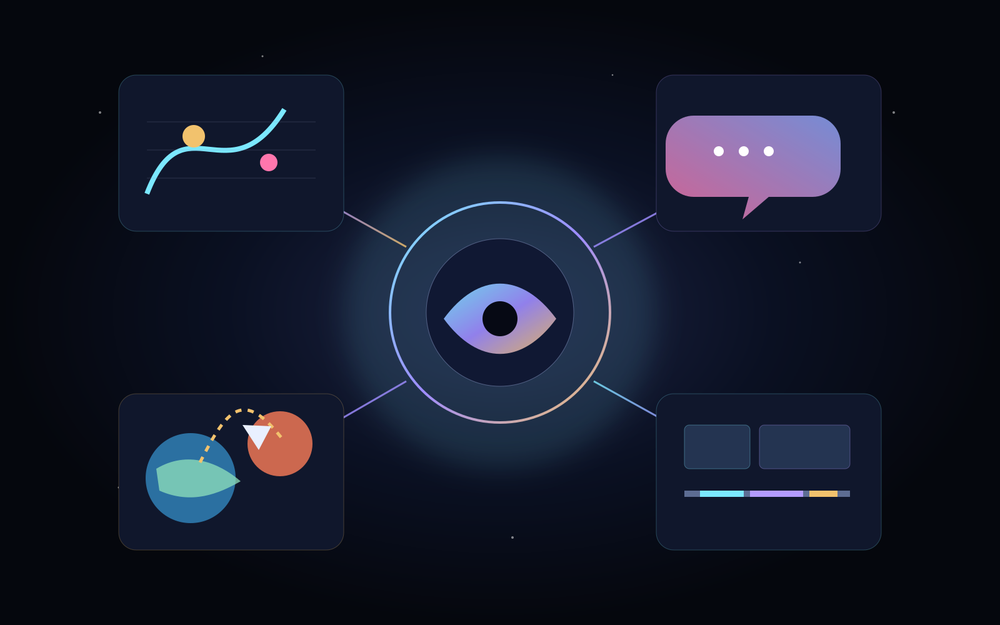
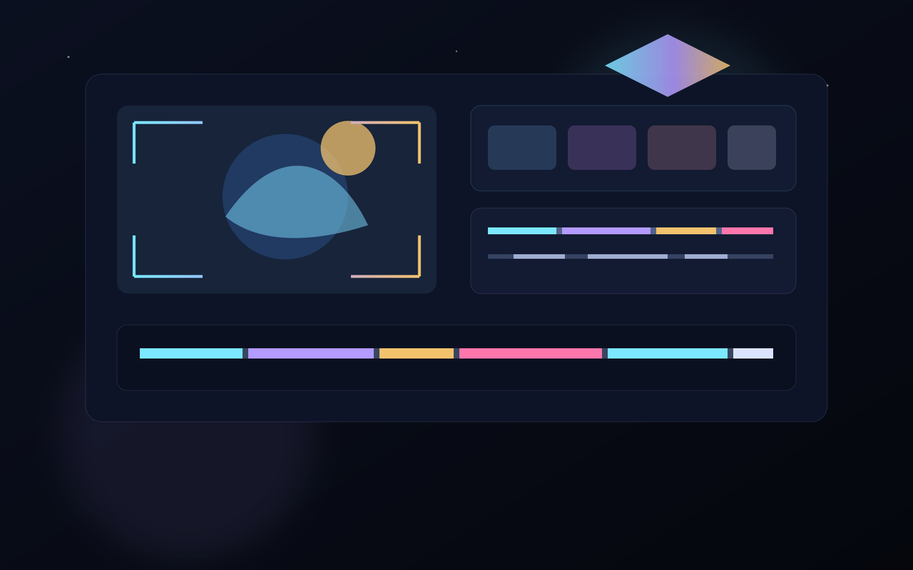

Visual clarity
Show the structure of the idea instead of burying it.
WISDOM develops games, AI-powered creative tools, language systems and visual learning software. We care about atmosphere, clarity and products that turn complexity into something vivid, playable and useful.

Each product lives in a different space, but all of them share the same instinct: make the experience clearer, more expressive and more alive.
Describe a scene naturally, ground it in what really exists inside the project, preview the result and keep control of the final cinematic output.
Describe the scene instead of authoring raw implementation data.
The tool is designed around actual actors, assets, effects and capabilities.
The goal is a cutscene workflow you can continue editing, not a sealed video.

We want products to feel alive without losing structure. That means combining atmosphere, visual clarity and practical workflows.
Show the structure of the idea instead of burying it.
Pacing, emphasis, mood and staging matter even in professional tools.
The result should remain workable after the first generation step.
Good software should not flatten imagination. It should give imagination a stronger structure and a better stage.